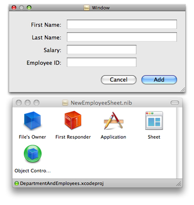

A Sheet for Creating a New Employee
It is possible to use the existing application to create new employees. The Add button that is part of the automatically-created user interface is connected to the add: method of the Employee array controller. If you click on the button, a new instance of the array controller's entity is added to its content array. Sometimes, though, you might want a more sophisticated user interface. Specifically, some applications use a sheet to allow the user to fill in details about a new entry, and optionally discard the new entry before it is committed. An example of how this could be implemented in the current project is illustrated in Figure 8-1.
In following this section, recall that you are expected to have mastered fundamental Cocoa tools and techniques (see “Introduction to NSPersistentDocument Core Data Tutorial”)—basic tasks such as connecting outlets and establishing bindings in Interface Builder are not described in detail.
In this section:
Design Considerations
Implementation Overview
Declaring and Setting up NewObjectSheetController
Implement the NewObjectSheetController Class
Supporting Undo
What Happened?
Design Considerations
There are a number of issues to consider in implementing the sheet. To create a new employee instance, you need a managed object context. A more subtle—but profound—aspect is that you should isolate any changes from the document, so that adding the new employee is a single action that can be undone in a single action. Moreover, it should be possible (if the user clicks Cancel) to discard the new instance without affecting the undo stack in the document.
Together, these constraints suggest a new pattern, where the sheet uses a separate managed object context. The new employee is inserted into this context when the sheet is created. If the user clicks the Add button, the employee is added to the document's main context. If the user clicks the Cancel button, the new employee is deleted and the sheet's context reset—the document's context remains unchanged.
The implementation shown here is but one of several possibilities. Management of the sheet and the managed object context are factored into a separate controller, distinct from the document object. This largely follows the coordinator design pattern (discussed in “Model-View-Controller in Cocoa (Mac OS X)” in Cocoa Fundamentals Guide). The goal here, though, is primarily to illustrate the use of Core Data, with comparatively few distractions; it also aims to be fairly reusable. You can adapt what you learn in the tutorial to your own needs. Which approach you take for your own project will depend on the constraints that are specific to your application.
Implementation Overview
There are several separate steps to the implementation. You need to define the functionality of a new class—the new employee sheet controller—and create a new nib file that contains the sheet.
The new employee controller needs to be able to do several things. It must coordinate its own managed object context—which must be configured using the managed object model from the document. The controller must also be able to add the new employee to the document's Department object's employees relationship. To do this, it needs access to that relationship, and again to the document's managed object model.
The simplest way to satisfy all these needs is to give the new employee controller an outlet to the employees array controller. The array controller gives access to the document's managed object context (to which it is bound), gives the new employee controller an easy way to create a new Employee instance, and (since it manages it) a means to insert the new Employee into the Department's employees relationship.
One issue with creating the new top-level object in the nib file is that when you use bindings an object retains other objects to which it is bound. This means that bindings must be broken to ensure there are no retain cycles when a document is closed. Moreover, since the nib file the new controller owns contains top level objects and the controller’s class does not inherit from
NSWindowController, you need to release the top level objects when the window is closed.You need to support undo in the sheet.
Declaring and Setting up NewObjectSheetController
Create in the project the files for a new class called NewObjectSheetController. An instance of this class is responsible for creating and managing the sheet for the new Employee object and for coordinating data between the sheet and the document.
The header file
The sheet controller uses a private managed object context. It also needs to be able to access the document window, the employees array controller, an object controller in its own nib file, and the sheet. Add to the interface suitable instance variables for all these.
@interface NewObjectSheetController : NSObject |
{ |
NSWindow *documentWindow; |
NSArrayController *sourceArrayController; |
NSObjectController *newObjectController; |
NSPanel *newObjectSheet; |
NSManagedObjectContext *managedObjectContext; |
} |
To complete the interface, add the property and method declarations. The controller needs to provide accessor methods for accessing the managed object contexts, and action methods to launch the sheet, dismiss the sheet, and support undo and redo.
@property (nonatomic, retain) IBOutlet NSWindow *documentWindow; |
@property (nonatomic, retain) IBOutlet NSArrayController *sourceArrayController; |
@property (nonatomic, retain) IBOutlet NSObjectController *newObjectController; |
@property (nonatomic, retain) IBOutlet NSPanel *newObjectSheet; |
@property (nonatomic, retain, readonly) NSManagedObjectContext *managedObjectContext; |
@property (nonatomic, retain, readonly) NSManagedObjectContext *documentManagedObjectContext; |
- (IBAction)add:(id)sender; |
- (IBAction)complete:sender; |
- (IBAction)cancelOperation:sender; |
- (IBAction)undo:sender; |
- (IBAction)redo:sender; |
@end |
Update the Document nib File
You need to add an instance of the sheet controller in the document nib file and configure it appropriately.
Import the
NewObjectSheetControllerheader file into MyDocument.nib, then instantiate an instance.Connect the outlets as follows:
Connect
documentWindowto the document window.Connect
sourceArrayControllerto the Employees array controller.Now disconnect the Add button from the array controller, and set its target to be the sheet controller and the action to be
add:.
Create and Configure the Sheet Controller nib File
The next stage is to create and configure the user interface for the sheet.
Create a new nib file named “NewEmployeeSheet” and add it to the project.
Import the header file for the
NewObjectSheetControllerclass into the nib file. Set the File’s Owner to be an instance ofNewObjectSheetController.Add an
NSObjectControllerinstance to the nib file. Set its entity to be Employee.Bind the
managedObjectContextbinding of theNSObjectControllerinstance to themanagedObjectContextkey of File’s Owner.Connect the File’s Owner’s
newObjectControlleroutlet to the object controller.Add an
NSPanelinstance to the nib file.Switch off its Visible at Launch flag.
Add user interface elements to the panel so that it looks like the image below.
Connect the File’s Owner’s
newObjectSheetoutlet to the panel.Connect the panel’s
delegateoutlet to the File’s Owner.Bind the values of the text fields to the appropriate attribute in the object controller. For example, bind the value of the First Name text field to the object controller’s
selection.firstNamekey path. Ensure that the “Validates Immediately” option is selected.Set number formatters for the Salary and Employee ID text fields.
Set up the target and action for the Add and Cancel buttons. The target is File’s Owner, the actions are
complete:andcancelOperation:respectively.
Implement the NewObjectSheetController Class
Managed Object Contexts
You need access to two different managed object contexts—one from the source array controller (the document's context), and one for the sheet controller itself. You can implement a simple accessor for the source array controller, whereas the sheet controller's accessor lazily creates the context on demand. You set the persistent store coordinator for the controller’s context to be the same as that of the document context.
Implement the managedObjectContext and documentManagedObjectContext methods as follows:
Listing 8-1 Managed object context accessor methods
- (NSManagedObjectContext *)documentManagedObjectContext { |
return [sourceArrayController managedObjectContext]; |
} |
- (NSManagedObjectContext *)managedObjectContext { |
if (managedObjectContext == nil) { |
managedObjectContext = [[NSManagedObjectContext alloc] init]; |
[managedObjectContext setPersistentStoreCoordinator: |
[[self documentManagedObjectContext] persistentStoreCoordinator]]; |
} |
return managedObjectContext; |
} |
Setting up the Sheet
You configure the sheet in the add: method. The first step is to load the nib file, if necessary.
- (IBAction)add:sender { |
if (newObjectSheet == nil) { |
NSBundle *myBundle = [NSBundle bundleForClass:[self class]]; |
NSNib *nib = [[NSNib alloc] initWithNibNamed:@"NewEmployeeSheet" bundle:myBundle]; |
BOOL success = [nib instantiateNibWithOwner:self topLevelObjects:nil]; |
if (success != YES) { |
// should present error |
return; |
} |
} |
// implementation continues... |
} |
You next need to create a new Employee instance. The easiest way is to use the object controller’s newObject method. It is also useful to disable undo registration to ensure that the user cannot undo the creation of the new object. This is similar to the initialization of the Department object for a new document.
NSUndoManager *undoManager = [[self managedObjectContext] undoManager]; |
[undoManager disableUndoRegistration]; |
id newObject = [newObjectController newObject]; |
[newObjectController addObject:newObject]; |
[[self managedObjectContext] processPendingChanges]; |
[undoManager enableUndoRegistration]; |
Finally, you need to display the sheet. Use the NSApplication method, beginSheet:modalForWindow:modalDelegate:didEndSelector:contextInfo:, and pass newObjectSheetDidEnd:returnCode:contextInfo: as the selector.
[NSApp beginSheet:newObjectSheet |
modalForWindow:documentWindow |
modalDelegate:self |
didEndSelector:@selector(newObjectSheetDidEnd:returnCode:contextInfo:) |
contextInfo:NULL]; |
Responding to Sheet Dismissal
Implement the action methods for the Add and Cancel buttons (see also complete: and cancelOperation:). Both end the sheet, but with different return codes. Note that the add method also invokes commitEditing on the object controller—this ensures that if the user has started editing a field, the pending changes are committed.
Listing 8-2 Action methods for the Add and Cancel buttons.
- (IBAction)complete:sender { |
[newObjectController commitEditing]; |
[NSApp endSheet:newObjectSheet returnCode:NSOKButton]; |
} |
- (IBAction)cancelOperation:sender { |
[NSApp endSheet:newObjectSheet returnCode:NSCancelButton]; |
} |
When the sheet actually ends, you must respond accordingly in the implementation of newObjectSheetDidEnd:returnCode:contextInfo: (the method you defined in “Setting up the Sheet” as the callback for the sheet). If the user pressed Add button, you make a new instance of a managed object using the source array controller, and copy the copy attributes from the sheet's managed object.
Whichever button was pressed, you set the content of the sheet's object controller to nil, and reset the context (this disposes of all changes). Finally, you order out the sheet.
- (void)newObjectSheetDidEnd:(NSWindow *)sheet |
returnCode:(int)returnCode |
contextInfo:(void *)contextInfo { |
NSManagedObject *sheetObject = [newObjectController content]; |
if (returnCode == NSOKButton) { |
NSManagedObject *newObject = [sourceArrayController newObject]; |
[newObject setValuesForKeysWithDictionary: |
[sheetObject dictionaryWithValuesForKeys:[[newObject class] keysToBeCopied]]]; |
[sourceArrayController addObject:newObject]; |
} |
[newObjectController setContent:nil]; |
[[self managedObjectContext] reset]; |
[newObjectSheet orderOut:self]; |
} |
To suppress compiler warnings for the use of the custom method (keysToBeCopied) in the Employee class, you must import the Employee header file. At the top of the implementation file, add:
#import "Employee.h" |
Tidying Up
To take care of memory management details, the sheet controller must dispose of the sheet and the object controller when the document closes. It must also dispose of the managed object context on dealloc. Implement an awakeFromNib method to register for window closing notification from the document's window, and implement the corresponding method (documentWindowWillClose:) to autorelease newObjectSheet and newObjectController.
Listing 8-3 Tidying up methods
- (void)awakeFromNib { |
[[NSNotificationCenter defaultCenter] addObserver:self |
selector:@selector(documentWindowWillClose:) |
name:NSWindowWillCloseNotification |
object:documentWindow]; |
} |
- (void)documentWindowWillClose:(NSNotification *)note { |
[[NSNotificationCenter defaultCenter] |
removeObserver:self name:nil object:nil]; |
[newObjectSheet autorelease]; |
[newObjectController autorelease]; |
} |
Supporting Undo
Although there are only four fields in the sheet, it is still useful to properly support undo—especially if you adapt the techniques described here to a larger task. There are two main steps to this. First, you have to ensure that the sheet uses the sheet controller’s managed object context’s undo manager and direct undo and redo actions to the undo manager. Second, to ensure the user interface is consistent, you should implement the validateUserInterfaceItem: method.
Accessing the undo manager
First, implement windowWillReturnUndoManager: to return the private managed object context’s undo manager:
- (NSUndoManager *)windowWillReturnUndoManager:(NSWindow *)sender { |
return [[self managedObjectContext] undoManager]; |
} |
Next, implement undo: and redo: methods to direct the actions to the context’s undo manager.
- (IBAction)undo:sender { |
[[[self managedObjectContext] undoManager] undo]; |
} |
- (IBAction)redo:sender { |
[[[self managedObjectContext] undoManager] redo]; |
} |
Validating user interface items
To validate menu items correctly, you implement the validateUserInterfaceItem: method to return the appropriate value. For more details, see User Interface Validation.
- (BOOL)validateUserInterfaceItem:(id <NSValidatedUserInterfaceItem>)anItem { |
if ([anItem action] == @selector(undo:)) { |
return [[[self managedObjectContext] undoManager] canUndo]; |
} |
if ([anItem action] == @selector(redo:)) { |
return [[[self managedObjectContext] undoManager] canRedo]; |
} |
return YES; |
} |
What Happened?
In this section, you followed the coordinator design pattern to create a new controller object that is responsible for managing a sheet used to create a new object. The controller uses a separate managed object context to keep the new managed object, and edits to the new managed object, discrete from the document..
© 2005, 2009 Apple Inc. All Rights Reserved. (Last updated: 2009-02-04)